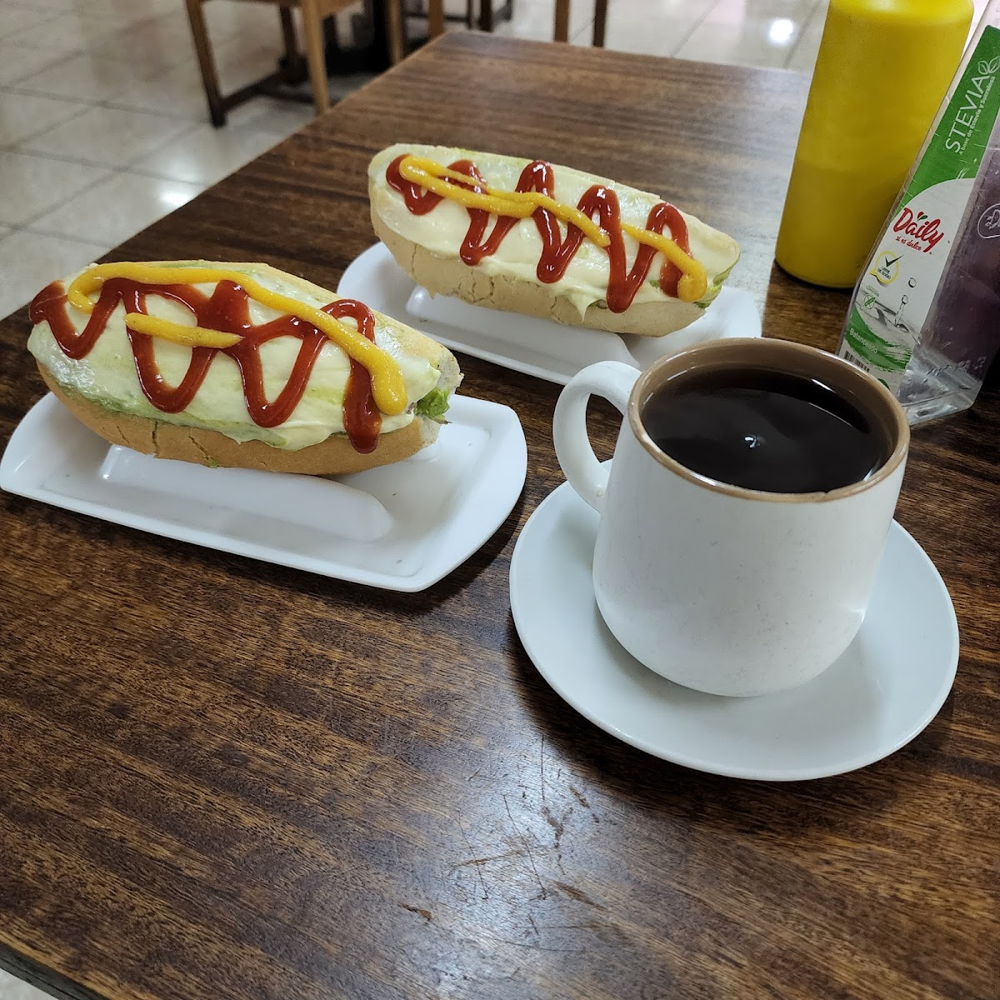
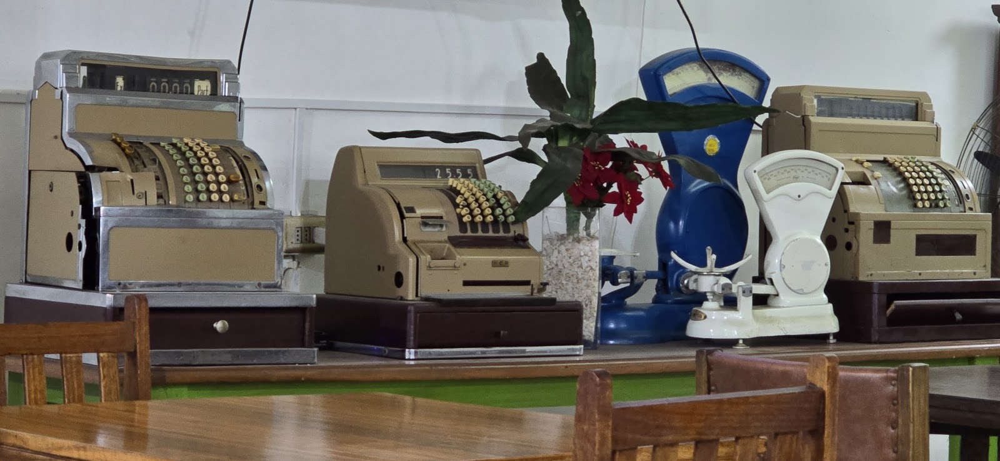
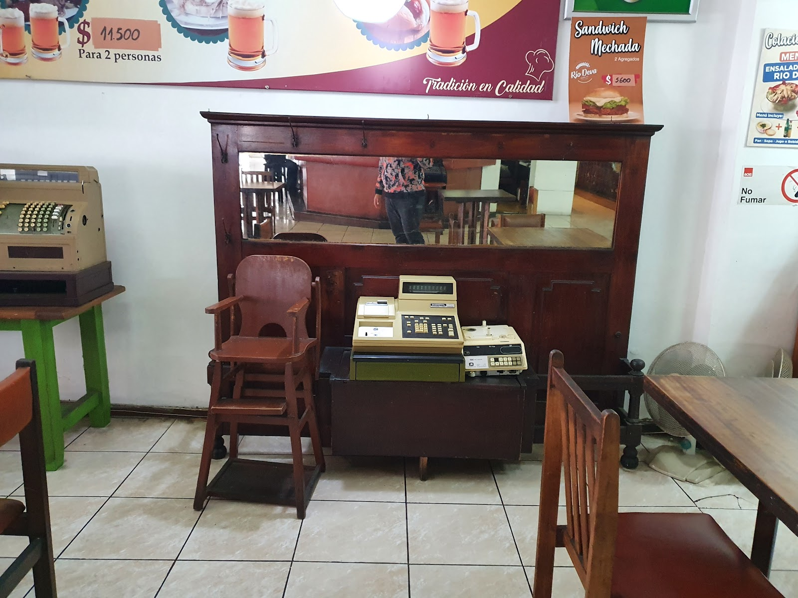
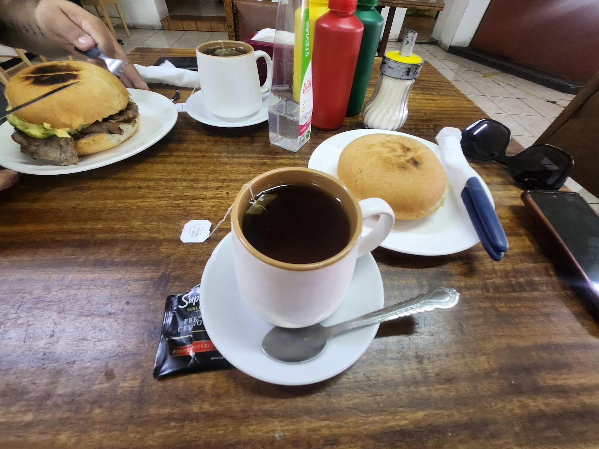
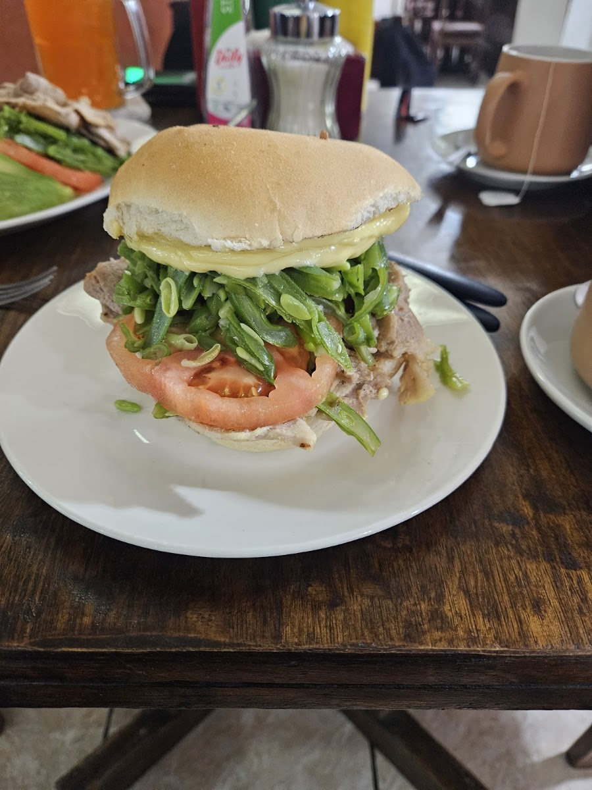
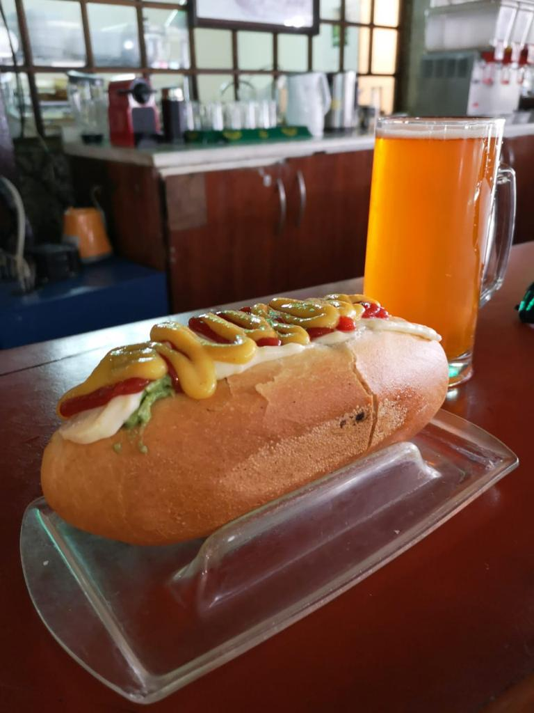
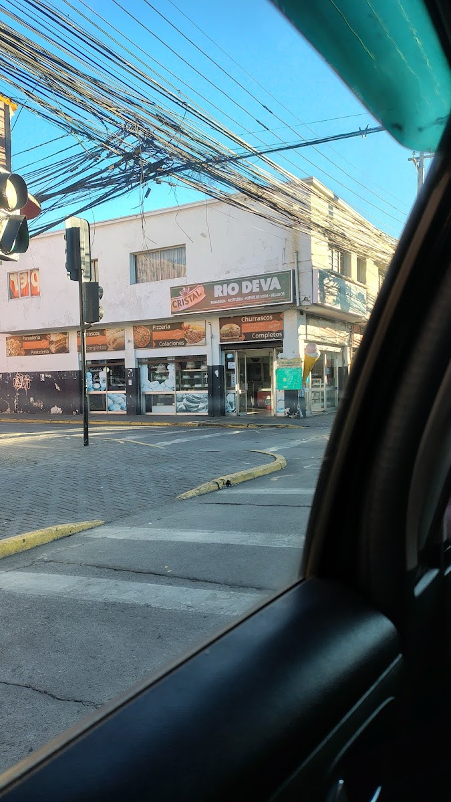

Sándwiches como corresponde
Churrasco italiano, chacarero, lomo italiano y mechada. Los mismos que la gente de Rancagua viene a buscar hace años.
Ver la carta →Brasil 1114 · Rancagua
Una fuente de soda como las de antes, en pleno centro de Rancagua: pan recién salido, mayonesa hecha en casa y un mesón de madera con las mismas cajas registradoras de bronce de hace décadas.
Lunes a sábado de 09:00 a 19:30

Churrasco italiano, chacarero, lomo italiano y mechada. Los mismos que la gente de Rancagua viene a buscar hace años.
Ver la carta →Además de la fuente de soda, acá mismo hay sección de panadería y pastelería —como lo cuentan los propios clientes en sus reseñas.
Leer reseñas →Se puede comer en el local, pedir para llevar o recibirlo en tu casa. Lo confirma la propia ficha del local en Google.
Cómo llegar →Nosotros
Esas tres palabras están pintadas en el mural del local. Es, bastante literalmente, lo que Río Deva viene haciendo en Brasil 1114.

Lo primero que llama la atención al entrar no es la carta: es la fila de cajas registradoras de bronce y balanzas antiguas sobre el mueble de madera, a la vista de todos. No es decoración comprada por metro — son piezas que quedaron.
El resto acompaña: mostrador de madera oscura con espejo, sillas de madera, baldosa en el piso y una silla alta para las guaguas. Un local que se ve exactamente como lo que es.

Las reseñas de Google repiten dos palabras: “clásico” y “tradición”. Y una frase que se repite sola: los mejores completos de Rancagua.
También aparece algo que no siempre se agradece en voz alta: que la atención es rápida, que nunca falla, y que las señoras que atienden son amables y respetuosas.
Ver las reseñas completas →



Todas las fotos son del propio local, publicadas en su ficha de Google Maps.
Carta
Los productos de abajo son reales: salen de la ficha del local y de lo que cuentan sus propios clientes.
Reseñas
Reseñas reales, copiadas tal cual de su ficha de Google Maps.
★★★★★
Los completos mas buenos de Rancagua. Clásico.
★★★★★
Los mejores lomitos de Rancagua. Un clásico para quienes conocen la ciudad y sus atractivos.
★★★★★
Exquisitos completos, personalmente los considero los mejores de Rancagua, es rápido y nunca falla, las señoras que atienden son muy amables y respetuosas, además encuentras la sección de panadería y pastelería.
★★★★★
Muy ricos sándwich, una mayonesa casera con una consistencia y sabor espectacular. Muy amable el personal y lugar con buena ambientación.
Redes
Sólo aparece acá lo que se pudo verificar. Nada de perfiles inventados.
Visítanos
Brasil 1114
Rancagua, Región de O'Higgins
Plus Code R6JX+9Q
Lunes a sábado de 09:00 a 19:30
Horario de su ficha de Google Maps, 15-09-2026.
Consumo en el lugar · Para llevar · Entrega a domicilio
Servicios declarados en su ficha de Google.
$5.000 – $10.000
Estimación de Google, informada por 23 clientes.